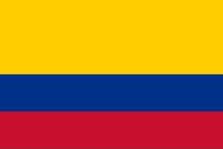

Juan David Zambrano
About me
My name is Juan David Zambrano, I was born in Popayán, Colombia and I am currently living with my family. I am studying Software Development at BYU-Pathway and Full-stack software development at Funval International. I love playing soccer and spending time with my friends and family.
Popayán, Colombia

Official Flag of Colombia
Colombia is a culturally rich South American nation nestled between the Caribbean and the Pacific, featuring landscapes that range from the Andes to the Amazon. Blending Indigenous, Spanish, and African roots, the country is celebrated globally for its incredible biodiversity, world-class coffee, and dynamic traditions.